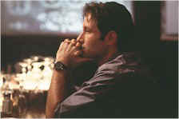
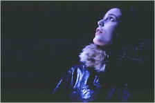

Contents | Features | Reviews | Books | Archives | Store |
 |
|
| Movie Credits | Buy It! |
The X-Files
Review by Elias Savada
Posted 19 June 1998
 |
Directed by
Rob Bowman. Starring David Duchovny, Gillian
Anderson, Written by Chris Carter, from a story by |
The marketing engines of Fox are in high gear (and boy, can I seem them smiling!) as their extraordinary television series franchise expands to the big screen, and I recommend finding the biggest one around to watch this spooky trek into things paranormal and extraterrestrial. X-philes (and they are LEGION!) are expected to line up early for this enjoyable, effects-laden romp with beloved FBI Special Agents Fox Mulder (David Duchovny) and Dana Scully (Gillian Anderson) as they battle the forces of reason. Director Rob Bowman (veteran helmer of 25 episodes and the feature Airborne ) and producer-writer (and, of course, creator of all things X) Chris Carter are to be congratulated for assembling a fine cast (mostly series regulars beefed up with small yet strong performances by Martin Landau, as an energetic crank alarmist, and Armin Mueller-Stahl, as a sinister businessman; stunning production design (Christopher Nowak); electrifying photography (Ward Russell); "special" make-up effects by Alec Gillis and Tom Woodruff, Jr.; and an effectively beefed-up symphonic score by Mark Snow. Others have said you don’t have to be one of the 20 million viewers of the show to appreciate the film. Yes, Virginia, the film stands – very well – on its own merits. It helps to do your homework, but don’t worry if you just barely crack the book.
The film is extremely rewarding on a wide-screen basis. although some of the close-ups might jar you. The X-Files is funny and edgy and absorbing. There are many small touches that add to its enjoyment. One such scene has a drunken Mulder looking for bladder relief at a DC bar. With the men’s room in disrepair, he retreats to an alley out back and lightens himself below a poster for Independence Day. Nothing like taking on the big flick of two summers ago. Yes, it’s another alien film, but, unless you’re cinematographically savvy, you won’t laugh at the self-effacing humor in realizing Fox also released ID4.
I confess I am a lesser-fan of the unconventional shenanigans of the pair (Which one’s Scully? Which one’s Mulder?) and their associates (What kind of characters are named The Cigarette-Smoking Man or The Well-Manicured Man? Didn’t one of them die on the show already?). I admit that there are numerous characters and situations in the film that left me befuddled. I didn’t let that bother me as I watched the cool-headed, determined Mulder and the hot and sweaty Scully toss barbs of sardonic humor about as they "fight the future" and the global conspiracy/cover-up set in motion by unknown (or at least confusing if you’re not a fan) sources that will affect the destiny of mankind. Heavy, eh? Well, that plus the forces at Fox who pray that you will not be disappointed by the $63-million film (you shouldn’t be) and that if you’re not an x-phile now, you will be a convert in time for the premiere of its sixth season this fall. If you watch TV, surf the web, read the newsweeklies, or generally breathe, you know about this film, and you might even be aware that it is butting heads with Mulan, an exceptionally good animated film from the gods at Disney. I can’t wait to see what box-office numbers these two pictures will have come the end of opening weekend, other than one will be on top and the other will be just behind. How’s that for handicapping?
The X-Files begins with a sequence reminiscent of the opening of the snow-covered desolation of Fargo or, better still, Smilla’s Sense of Snow, with a subterranean prehistoric glance 37,000 years ago at a close encounter of a deadly kind in what is now North Texas. Initial score: Caveman 1, Alien 0. Ah, but the secret war is not over as the action shoots forward to the present when Stevie (Lucas Black, the young friend of Billy Bob Thornton’s ‘Karl Childers’ in Sling Blade) stumbles onto something unearthly and mysterious, finding "black oil" (a lethal-creepy dark blood, for the five of you who don’t watch the show) in Blackwood County. The story quickly thrusts Scully, Mulder, and members of The Syndicate (described in Fox’s PR material as "a powerful global cabal of government insiders and businessmen") into an ever-maddening plot that hops between Texas, Washington, London, and Antarctica in their efforts to uncover or cover up the "truth," depending on which side of the conspiratorial fence you sit.
Stars Duchovny and Anderson shouldn’t give up their lucrative day jobs just yet – particularly after the former’s dud last year in Playing God. Although their chemistry here is nearly as infectious as the alien virus threatening our planet, they are still small screen heroes, an integral part of the X-Files patent kingdom. They undoubtedly realize this and are assuredly building up nest eggs before embarking on the next stages of their careers--beyond X-Files. I wouldn’t be too concerned. Even if the television show loses a main character or two, it appears that X-Files: The Movie is the beginning of a profitable theatrical franchise. In the meantime, their initial big screen effort gives you chills and thrills. There are aliens galore and duplicitous humans around every dark corner. Scully and Mulder go through the wringer in their never-ending efforts to tell us that we not alone and we should trust no one. Believe them for at least two hours and you’ll have a fine time. Just as the ending of Raiders of the Lost Ark left you guessing (and in search of the glorious Indiana Jones follow-ups), The X-Files answers as many questions as it leaves other mysteries unsolved. Do I smell sequel? You bet!
Contents | Features | Reviews | Books | Archives | Store
Copyright © 1999 by Nitrate Productions, Inc. All Rights Reserved.